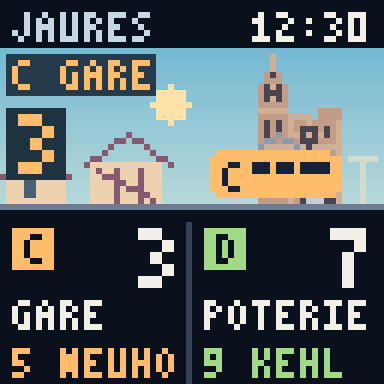
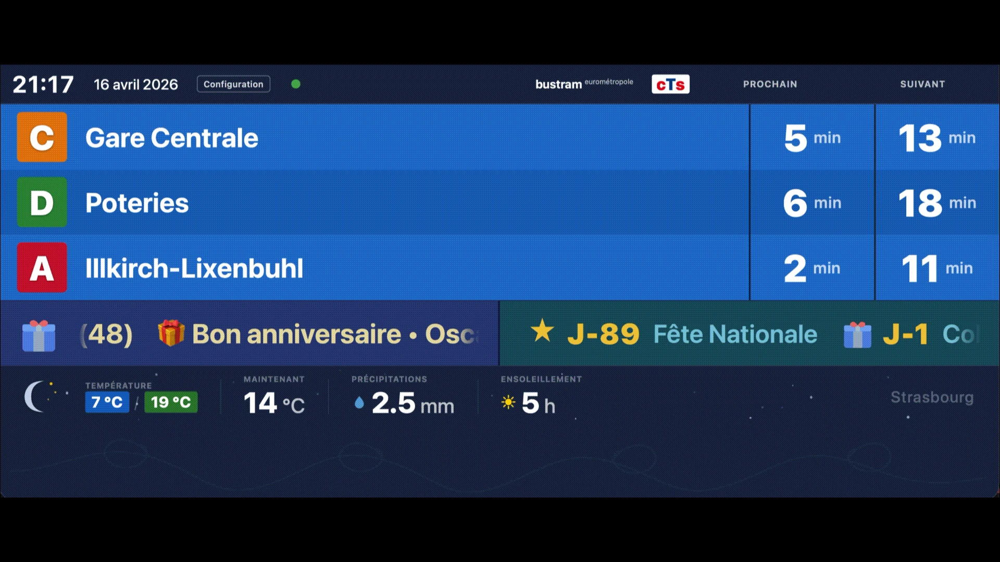
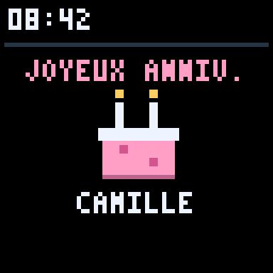
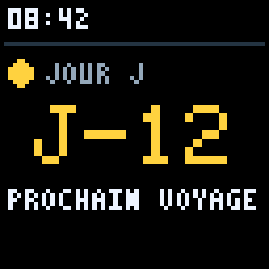

Votre prochain tram.
En un regard.
Le rythme de Strasbourg, chez vous. Vos prochains départs, la météo et les moments qui comptent. Le tout, en un regard.

Le tableau de la station.
Maintenant chez vous.
Un regard avant de partir. Retrouvez les prochains trams et bus à vos arrêts favoris, sans interrompre votre matinée.

Le tableau de départs en images. Les aperçus présentent des exemples, pas les départs en direct.
Vos arrêts, en un regard.
Rassemblez vos arrêts habituels. Le tableau passe de l’un à l’autre et affiche les deux prochains départs dans chaque direction.
Une place sur tous vos écrans.
Une tablette dans la cuisine, un écran sur le bureau ou votre téléphone. Le tableau s’adapte à votre façon de préparer la journée.
Prêt pour la journée dehors.
Ajoutez la météo locale à côté de vos départs. Un petit coup de pouce pour savoir quand partir et quoi emporter.
Un petit Strasbourg.
Beaucoup de caractère.
Sur un Pixoo64, votre tableau devient une petite scène de la ville. La cathédrale, un tram qui passe, votre prochain départ. Des informations utiles avec une personnalité bien à elles.
Des premières lueurs du matin au dernier tram du soir, la miniature suit la lumière du jour à Strasbourg.
Explorez les lumières de la journée. L’écran Pixoo64 est facultatif et vendu séparément.
Pour les moments entre deux départs.
Certains jours méritent une petite attention. Un anniversaire, les prochaines vacances, une date que vous attendez. Gardez-les près de vous, à côté de vos trajets quotidiens.
- Anniversaires
- Comptes à rebours


Écrans d’illustration avec des noms fictifs et des exemples d’événements.
Une question du quotidien.
Un projet personnel.
Quand passe le prochain tram ? CTS Departures est né de cette simple question, et de l’envie d’avoir la réponse sous les yeux.
Créé par Jean-Baptiste Meyer, ce projet fait partie de JibStudios : des projets indépendants guidés par la curiosité et le goût des petits détails.
Entrer dans JibStudiosQuelques repères.
Est-ce un service officiel de la CTS ?
CTS Departures est un projet indépendant de JibStudios. Il utilise les informations de départ du réseau CTS de Strasbourg, sans affiliation ni approbation de la CTS.
Faut-il un écran pixel ?
Le tableau fonctionne dans un navigateur sur votre téléphone, votre tablette ou votre ordinateur. Le Divoom Pixoo64, facultatif, ajoute un écran pixel dédié pour la maison ou le bureau.
Comment commencer ?
Le projet est gratuit et open source. Téléchargez une version et suivez le guide sur GitHub. Une première installation est nécessaire pour afficher vos propres arrêts. Consulter le guide de démarrage.
Faites une place à
votre prochain départ.
Un peu moins d’attente. Un peu plus de Strasbourg.